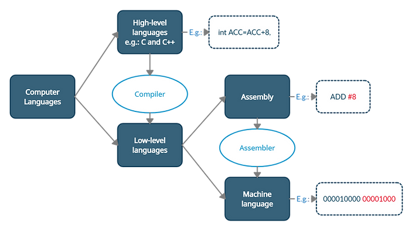

Over the years, computer languages have evolved from Low-Level to High-Level Languages. In the early days of computers, the first programs were written directly in machine (binary) language, the only language directly understood by a CPU. Nowadays, the great majority of software is written in generic high-level languages, closer to the way humans reason and to the specific problems to be solved. High-level languages can then be translated to machine language through specific programs called compilers. Hence, computer languages can be broadly classified as follows:
High-level languages are computer languages which can be conveniently and efficiently used by programmers. It is usually easier and more efficient for a programmer to reason with a language oriented to the problems they need to solve, rather than with a language closer to what the computer hardware can understand. Languages like C, C++, JAVA, Python, etc., are examples of high-level languages. They are closer to human languages, compared to low-level languages. Even though the high-level languages are more convenient for the users, they cannot be directly executed by computers. High-level languages need to be converted into low-level languages to make them understandable (executable) by a computer. Special programs called compilers can be used to convert high-level languages to low-level, CPU-specific languages. A consequent advantage is that these high-level languages are independent from the machine (CPU) where they will be "executed".
Low-level languages are dependent on the particular computer, or more precisely the specific CPU, where they are executed.
Machine Language
The lower possible level language (excluding for simplicity the case of some CPUs which make use of microprograms) is
known as Machine Language, and it is the only language which can be understood by the computer (actually its CPU). The instructions in machine
language are written in binary code, that is they are expressed with just two symbols, 1 and 0 (binary digits). These symbols may be physically
represented by the voltage in a circuit, for example 0 as null voltage, and 1 as a predetermined voltage. Or they may also be represented, respectively,
as an open (absence of current flowing) or closed (current flowing) circuit, or as a discharged capacitor versus a charged one. A binary digit is called "bit", and 8 bits form a byte.
Assembly Language
The assembly is a computer language whose instructions consist of predefined words called mnemonics, such as ADD or NOT. The pure assembly instructions (that is excluding
particular macro-instructions or special directives) correspond directly (one to one) to the instructions in machine language. The computer does not understand these mnemonics,
so they are translated through a simple program called Assembler into machine language.
That is, the Assembler takes programs written in assembly as its input and produces executable machine code as its output. This makes it possible
for the computer to understand the instructions originally written in Assembly.
The following section will cover how the translation from high to a low level language is carried out,
and how constructs such as For, While, and If are translated in assembler and binary code.